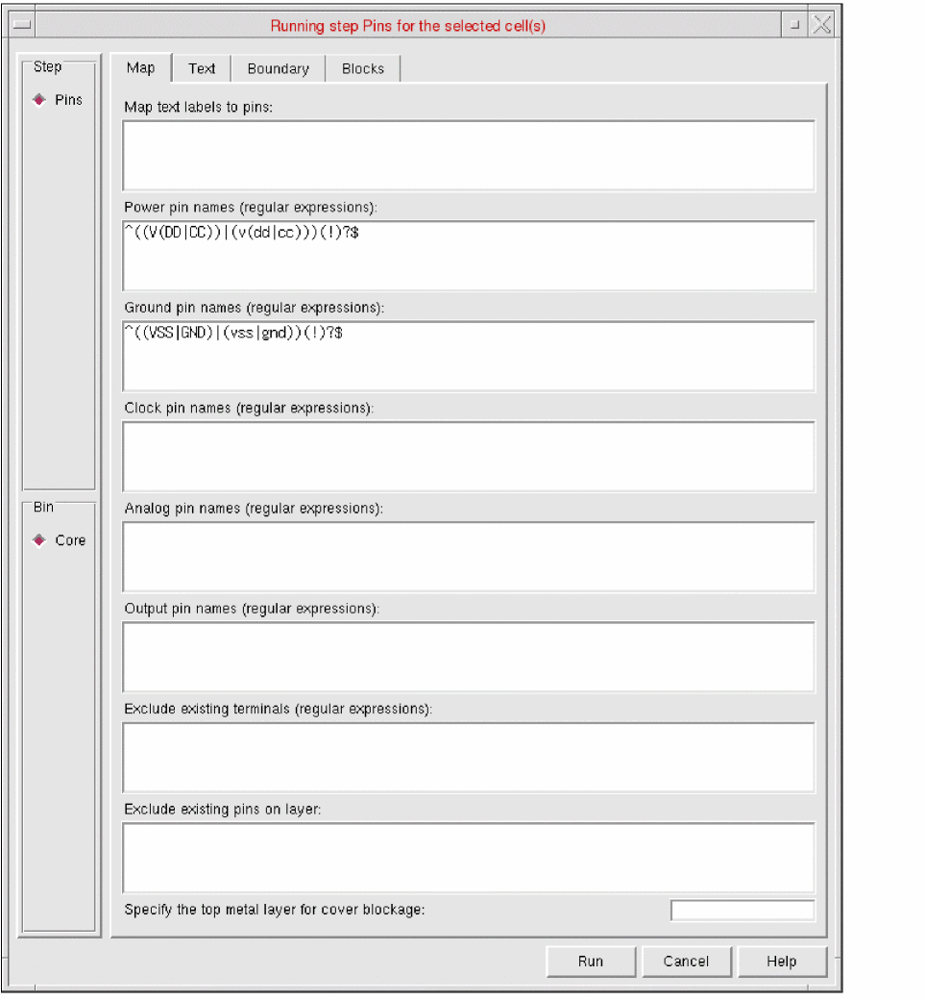
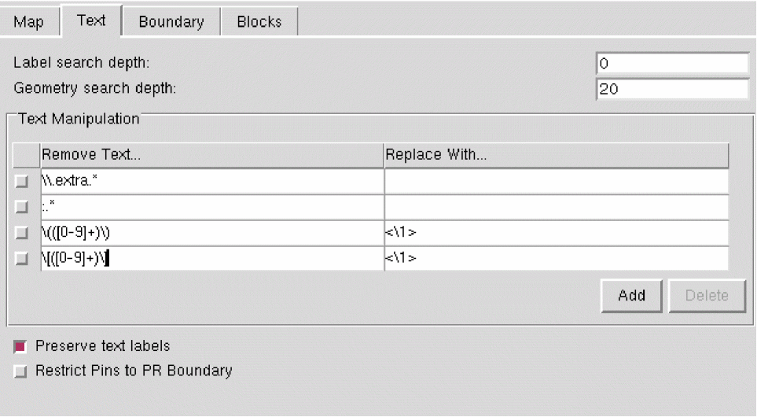

Customizing Text Labels for Abstract Generation
To customize text labels in the Standalone Abstract Generator:
-
Select one or more cells in the main window and choose Flow – Pins, or click the Pins icon.
The Running step Pins form is displayed. -
Select the Text tab.
 - In the Label search depth field, specify a value to control how far down the design hierarchy does Abstract Generator search for text labels during text-to-pin mapping.
- In the Geometry search depth field, specify a value to control how far down the design hierarchy does Abstract Generator search for metal underneath a text label.
- In the Text Manipulation table, specify the expression to be replaced in the Remove Text column and the text to be replaced with in the Replace With column.
-
Enter the following in the Text Manipulation fields to change parenthesis,
(),to angle brackets,<>,for the label(Y),
Remove Text... Replace with... Result - Click Add to add a new row to the table.
- Click Delete to delete the selected rows from the table.
- Select Preserve text labels to retain all existing pins in the layout, along with their labels, irrespective of whether the pins were created by Abstract Generator during the Abstract step.
- Select Restrict Pins to PR Boundary to control the geometry of N-Well pins created during the abstract generation process.
-
Click Run.
The Percent Complete message box reports the progress of the step.
The customized text labels are generated in the layout.
Set the t to generate additional pins from labels, even if the corresponding net has existing pins in layout.
Related Topics
Return to top